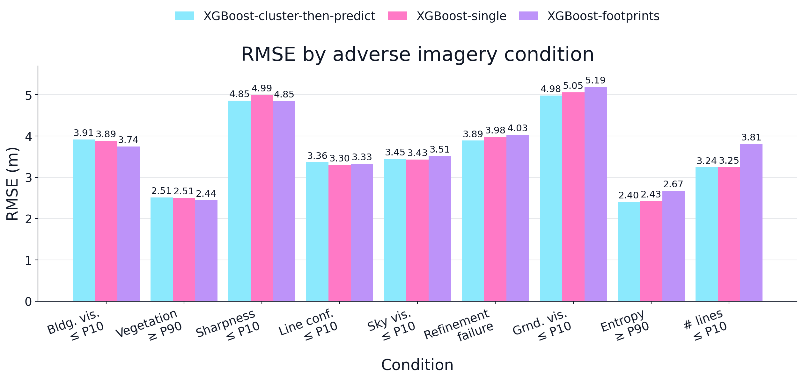
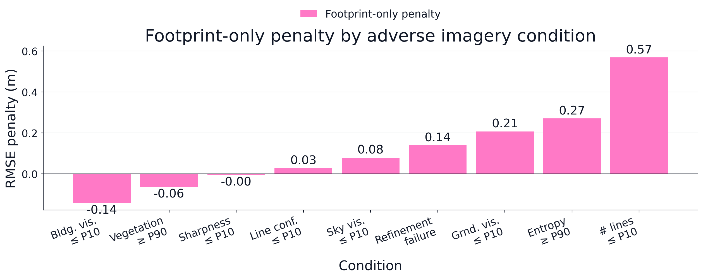

import numpy as np
import joblib
import json
def get_rmse(
y_pred,
y_real
):
rmse = 0
n = len(y_pred)
for i in range(0,n):
value_pred = y_pred[i]
value_real = y_real[i]
rmse +=(1/n)*(value_pred - value_real)**2
rmse = np.sqrt(rmse)
return rmse
def get_mae(y_pred, y_real):
mae = 0
n = len(y_pred)
for i in range(0,n):
value_pred = y_pred[i]
value_real = y_real[i]
mae += (1/n)*np.abs(value_pred - value_real)
return mae
def filter_data_by_indices(data, indices):
new_data = []
for i in range(0,len(data)):
if(i in indices):
new_data.append(data[i])
return new_data
def binarize_values(
original_values,
percentile = 75
):
high_value_percentile = np.percentile(original_values, percentile)
low_mid_values = []
high_values = []
low_mid_indices = []
high_indices = []
for i in range(0,len(original_values)):
value = original_values[i]
if(value > high_value_percentile):
high_values.append(value)
high_indices.append(i)
else:
low_mid_values.append(value)
low_mid_indices.append(i)
return low_mid_values, high_values, low_mid_indices, high_indicesFramework experiment 3
This is the hardest experiment out of the three. There are many conditions to evaluate and for some of them we need the images.
Auxiliary functions
Following the structure of the first two experiments let’s first define some auxiliary functions.
Function that applies the experiment
In this experiment we evaluate if street view imagery is worth acquiring to improve the building height estimations. We compare the footprint-based XGBoost model, which does not use the images, against the single XGBoost model and the cluster-then-predict system when the images have low quality. To do so we:
Compute image quality descriptors for every validation image: number of detected lines, average confidence of the detected lines, view refinement success, sharpness, image entropy, and the building, sky and ground visibility. We also use the facade vegetation, which is already one of the model features.
Define nine adverse conditions. Each one keeps the buildings at or below the 10th percentile (P10) of a descriptor, or above the 90th percentile (P90) for image entropy and facade vegetation. Refinement success is binary, so for that condition we keep the buildings where the view refinement failed.
For each condition we obtain the building height estimation error (\(RMSE\) and \(MAE\)) of the three models and compare the single XGBoost and the cluster-then-predict system against the footprint-based model:
\[\begin{equation} \Delta_{\text{single}} = RMSE_{\text{single}} - RMSE_{\text{footprints}} \end{equation}\]
\[\begin{equation} \Delta_{\text{CTP}} = RMSE_{\text{CTP}} - RMSE_{\text{footprints}} \end{equation}\]
- We get the penalty of using only the footprints, measured against the best model that uses the images:
\[\begin{equation} \text{Penalty} = RMSE_{\text{footprints}} - \min(RMSE_{\text{single}}, RMSE_{\text{CTP}}) \end{equation}\]
def run_experiment_3(
features,
model_ctp,
model_single,
model_footprints,
real_heights
):
real_heights = np.asarray(real_heights)
features = np.asarray(features)
n = len(real_heights)
predictions_ctp = model_ctp.predict(features)
predictions_single = model_single.predict(features)
predictions_footprints = model_footprints.predict(features[:, :13])
mae_footprints = get_mae(predictions_footprints, real_heights)
rmse_footprints = get_rmse(predictions_footprints, real_heights)
mae_single = get_mae(predictions_single, real_heights)
rmse_single = get_rmse(predictions_single, real_heights)
mae_ctp = get_mae(predictions_ctp, real_heights)
rmse_ctp = get_rmse(predictions_ctp, real_heights)
delta_mae_single_footprint = mae_single - mae_footprints
delta_rmse_single_footprint = rmse_single - rmse_footprints
delta_mae_ctp_footprint = mae_ctp - mae_footprints
delta_rmse_ctp_footprint = rmse_ctp - rmse_footprints
results = {
"sample_size":n,
"mae_footprints":mae_footprints,
"rmse_footprints":rmse_footprints,
"mae_single":mae_single,
"rmse_single":rmse_single,
"mae_ctp":mae_ctp,
"rmse_ctp":rmse_ctp,
"delta_mae_single_footprint": delta_mae_single_footprint,
"delta_rmse_single_footprint":delta_rmse_single_footprint,
"delta_mae_ctp_footprint":delta_mae_ctp_footprint,
"delta_rmse_ctp_footprint":delta_rmse_ctp_footprint
}
return resultsOpening the data
DATA_PATH = "/Users/legariapena.j/Documents/imageable-2026/imageable/data/training_validation_data/data.json"
with open(DATA_PATH, 'r') as file:
data = json.load(file)Image quality descriptors
This is the slowest part of the experiment. It runs the line detection and segmentation models over every validation image and it takes hours, so I ran it once and saved the descriptors in preparation_experiment_3.json. The cells of this section are not executed when the notebook is rendered.
First we associate every building with its image and metadata.
from pathlib import Path
SRC_IMAGES_PATH = Path("/Users/legariapena.j/Library/CloudStorage/GoogleDrive-legariapena.j@husky.neu.edu/"
"Shared drives/Cool and Carbon Free Africa/Building Image Datasets/data")
#Boston buildings 907-914 have empty image.jpg and metadata.json files in the drive
BUILDINGS_WITHOUT_IMAGES = [("Boston", f"building_{n}") for n in range(907, 915)]
images_paths = []
metadata_paths = []
def get_image_folder(city, ind):
if ind <= 1000:
return "Images 1 - 1000"
if city == "Monterrey" and 9000 < ind <= 10110:
return "Images 9000 - 10000"
start = ((ind - 1) // 1000) * 1000
end = start + 1000
return f"Images {start} - {end}"
for vector in data:
city = vector["city"]
if city == "Monterrey":
city_folder = "monterrey"
elif city == "Boston":
city_folder = "boston"
else:
raise ValueError(f"Unknown city: {city}")
building_id = vector["building_id"]
ind = int(building_id.split("_")[-1])
folder = get_image_folder(city, ind)
path_image = SRC_IMAGES_PATH / city_folder / folder / building_id / "image.jpg"
path_metadata = SRC_IMAGES_PATH / city_folder / folder / building_id / "metadata.json"
images_paths.append(path_image)
metadata_paths.append(path_metadata)Now the functions that compute each descriptor.
import cv2
from imageable._models.lcnn import LCNNWrapper
from pathlib import Path
ROOT = Path("/Users/legariapena.j/Documents/imageable-2026/imageable")
lcnn_model = LCNNWrapper(
config_path = str(ROOT/"src"/"imageable"/"assets"/"wireframe.yaml"),
device = "mps",
checkpoint_path = ""
)
def get_lines_and_scores(img):
lcnn_results = lcnn_model.predict(img)
lines = lcnn_results["processed_lines"]
scores = lcnn_results["processed_scores"]
return lines, scores
from imageable._models.vpts.vpts_wrapper import VPTSWrapper
vpts_model = VPTSWrapper()
def get_vpts(img):
vpts_dict = vpts_model.predict(
img,
FOV = 90.0,
seed = 42,
length_threshold = 60
)
vps = vpts_dict["vpts_2d"]
return vps
def get_refinement_success(img_metadata):
return img_metadata.get("adjustment_success", None)
def get_image_entropy(img):
gray_image = (0.299 * img[:, :, 0] +0.587 * img[:, :, 1] +0.114 * img[:, :, 2]).astype(np.uint8)
counts = np.zeros(256)
n = np.size(img, 0)
m = np.size(img, 1)
all_pixel_counts = n*m
for i in range(0,n):
for j in range(0,m):
value = gray_image[i,j]
counts[value] += 1
probabilities = counts/all_pixel_counts
entropy = 0
for i in range(0,len(probabilities)):
probability = probabilities[i]
if(probability > 0):
entropy += probability*np.log2(probability)
entropy = -entropy
return entropy
def get_sharpness(img):
gray = cv2.cvtColor(img, cv2.COLOR_RGB2GRAY)
return cv2.Laplacian(gray, cv2.CV_64F).var()
from imageable._models.huggingface.floor_sky_ratio_calculator import FloorSkyRatioCalculator
model_sky_fractions = FloorSkyRatioCalculator(device="mps")
model_sky_fractions.load_model()
def get_sky_and_ground_ratios(img):
ratios = model_sky_fractions.predict(img, conf = 0.5)
sky_fraction = ratios["sky_ratio"]
ground_fraction = ratios["floor_ratio"]
return sky_fraction, ground_fraction
from imageable._models.huggingface.segformer_segmentation import SegformerSegmentationWrapper
model_facade_fraction = SegformerSegmentationWrapper(
model_name="nvidia/segformer-b5-finetuned-ade-640-640",
device="mps",
palette_path="/Users/legariapena.j/Documents/imageable-2026/imageable/src/imageable/assets/ade20k_palette.json",
)
model_facade_fraction.load_model()
def get_facade_ratio(img):
remapping_dict = {
2: 1,
26: 1,
3: 2,
12: 11,
7: 11,
4: 11,
10: 11,
14: 11,
}
seg_raw = model_facade_fraction.predict(img)
seg_raw = seg_raw.squeeze().astype("uint8") + 1
seg = model_facade_fraction._remap_labels(seg_raw, remapping_dict)
return (seg == 1).mean()Finally we compute the descriptors for the validation images and save them.
from PIL import Image
from tqdm import tqdm
image_feature_dictionaries = []
for i in tqdm(range(0,len(data))):
vector = data[i]
if(vector["data_type"] == "train"):
continue
if((vector["city"], vector["building_id"]) in BUILDINGS_WITHOUT_IMAGES):
continue
metadata_path = Path(metadata_paths[i])
img_path = Path(images_paths[i])
data_dictionary = {
"data_position": i,
"data_index": vector["index"],
"city": vector["city"],
"data_type": vector["data_type"],
"cluster": vector["cluster"],
"real_height": vector["real_height"],
"image_path": str(img_path),
"metadata_path": str(metadata_path),
"refinement_success": None,
"status": None,
"lines": None,
"scores": None,
"vanishing_points": None,
"image_entropy": None,
"sharpness": None,
"sky_ratio": None,
"ground_ratio": None,
"facade_ratio": None,
}
if metadata_path.exists():
with metadata_path.open("r") as file:
metadata = json.load(file)
data_dictionary["status"] = metadata.get("status", None)
data_dictionary["refinement_success"] = get_refinement_success(metadata)
else:
print(metadata_path)
print("metadata cannot be found")
if img_path.exists():
img = np.array(Image.open(img_path).convert("RGB"))
lines, scores = get_lines_and_scores(img)
data_dictionary["lines"] = lines
data_dictionary["scores"] = scores
data_dictionary["vanishing_points"] = get_vpts(img)
data_dictionary["image_entropy"] = get_image_entropy(img)
data_dictionary["sharpness"] = get_sharpness(img)
sky_ratio, ground_ratio = get_sky_and_ground_ratios(img)
data_dictionary["sky_ratio"] = sky_ratio
data_dictionary["ground_ratio"] = ground_ratio
data_dictionary["facade_ratio"] = get_facade_ratio(img)
else:
print(img_path)
print("image cannot be found")
image_feature_dictionaries.append(data_dictionary)
OUTPUT_IMAGE_FEATURES_PATH = ROOT / "framework-imageable" / "results" / "preparation_experiment_3.json"
OUTPUT_IMAGE_FEATURES_PATH.parent.mkdir(parents=True, exist_ok=True)
class NumpyEncoder(json.JSONEncoder):
def default(self, obj):
if isinstance(obj, np.ndarray):
return obj.tolist()
if isinstance(obj, (np.integer,)):
return int(obj)
if isinstance(obj, (np.floating,)):
return float(obj)
if isinstance(obj, (np.bool_,)):
return bool(obj)
return super().default(obj)
with open(OUTPUT_IMAGE_FEATURES_PATH, "w") as file:
json.dump(image_feature_dictionaries, file, indent=4, cls=NumpyEncoder)
print(f"Saved {len(image_feature_dictionaries)} image feature dictionaries to {OUTPUT_IMAGE_FEATURES_PATH}")Preparing the data
Now we open the models and the descriptors, and keep only the validation instances.
CTP_MODEL_PATH = "/Users/legariapena.j/Documents/imageable-2026/imageable/data/models/cluster_ensemble_model.pkl"
SINGLE_MODEL_PATH = "/Users/legariapena.j/Documents/imageable-2026/imageable/data/models/single_xgb_model.pkl"
FOOTPRINTS_MODEL_PATH = "/Users/legariapena.j/Documents/imageable-2026/imageable/data/models/footprint_xgb_model.pkl"
#Open the models
single_model = joblib.load(SINGLE_MODEL_PATH)
footprints_model = joblib.load(FOOTPRINTS_MODEL_PATH)
cluster_then_predict_model = joblib.load(CTP_MODEL_PATH)
NEW_FEATURES_DATA_PATH = "/Users/legariapena.j/Documents/imageable-2026/imageable/framework-imageable/results/preparation_experiment_3.json"
with open(NEW_FEATURES_DATA_PATH, "r") as file:
new_data = json.load(file)
#The same buildings without images that we skipped when computing the descriptors
BUILDINGS_WITHOUT_IMAGES = [("Boston", f"building_{n}") for n in range(907, 915)]
validation_data = [d for d in data if d["data_type"] == "validation" and (d["city"], d["building_id"]) not in BUILDINGS_WITHOUT_IMAGES]
validation_real_heights = [d["real_height"] for d in data if d["data_type"] =="validation" and (d["city"], d["building_id"]) not in BUILDINGS_WITHOUT_IMAGES]
validation_features = [d["features"] for d in validation_data]
#We need to keep the right features
feature_names_long = validation_data[0]["feature_names"]
FEATURES_VECTOR = [
"unprojected_area",
"projected_area",
"longitude_difference",
"latitude_difference",
"n_vertices",
"shape_length",
"complexity",
"inverse_average_segment_length",
"vertices_per_area",
"average_complexity_per_segment",
"isoperimetric_quotient",
"mean_distance_to_neighbors",
"nearest_neighbor_distance",
"material_pct_concrete",
"material_pct_metal",
"material_pct_glass",
"material_pct_plastic",
"material_pct_asphalt",
"material_pct_brick",
"material_pct_human_body",
"material_pct_wood",
"material_pct_plaster",
"material_pct_leaf",
"building_height"
]
feature_right_indices = []
for i in range(0,len(FEATURES_VECTOR)):
feature_name = FEATURES_VECTOR[i]
long_index = feature_names_long.index(feature_name)
feature_right_indices.append(long_index)
for i in range(0,len(validation_features)):
validation_features[i] = filter_data_by_indices(validation_features[i], feature_right_indices)
master_dictionary = {}Applying it to the different conditions
1. Low number of detected lines
number_of_lines = []
for i in range(0,len(new_data)):
n_lines = len(new_data[i]["lines"])
number_of_lines.append(n_lines)
low_values, high_values, low_indices, high_indices = binarize_values(
number_of_lines,
percentile = 10
)
low_detected_lines_features = filter_data_by_indices(validation_features, low_indices)
low_detected_lines_real_heights = filter_data_by_indices(validation_real_heights, low_indices)
results_experiment = run_experiment_3(
low_detected_lines_features,
cluster_then_predict_model,
single_model,
footprints_model,
low_detected_lines_real_heights
)
master_dictionary["low_detected_lines"] = results_experiment2. Low average confidence thresholds
average_confidence_thresholds = []
for i in range(0,len(new_data)):
thresholds = new_data[i]["scores"]
average_confidence_thresholds.append(np.mean(thresholds))
print(len(average_confidence_thresholds))
print(len(validation_features))
low_values, high_values, low_indices, high_indices = binarize_values(
average_confidence_thresholds,
percentile = 10
)
low_line_detection_features = filter_data_by_indices(validation_features, low_indices)
low_line_detection_real_heights = filter_data_by_indices(validation_real_heights, low_indices)
results_experiment = run_experiment_3(
low_line_detection_features,
cluster_then_predict_model,
single_model,
footprints_model,
low_line_detection_real_heights
)
master_dictionary["low_average_confidence"] = results_experiment4174
41743. Refinement failures
indices_failure = []
for i in range(0,len(new_data)):
success = new_data[i]["refinement_success"]
if(success == False):
indices_failure.append(i)
failure_features = filter_data_by_indices(validation_features, indices_failure)
failure_real_heights = filter_data_by_indices(validation_real_heights, indices_failure)
results_experiment = run_experiment_3(
failure_features,
cluster_then_predict_model,
single_model,
footprints_model,
failure_real_heights
)
master_dictionary["refinement_failures"] = results_experiment4. Status failures
indices_status_failure = []
for i in range(0,len(new_data)):
status = new_data[i]["status"]
if(status == False):
indices_status_failure.append(i)
status_failure_features = filter_data_by_indices(validation_features, indices_status_failure)
status_failure_real_heights = filter_data_by_indices(validation_real_heights, indices_status_failure)
print(len(status_failure_features))
print("The number of failures is zero so there's no need to do this. ")0
The number of failures is zero so there's no need to do this. 5. Low building visibility
building_visibility = []
for i in range(0,len(new_data)):
facade_ratio = new_data[i]["facade_ratio"]
building_visibility.append(facade_ratio)
low_values, high_values, low_indices, high_indices = binarize_values(
building_visibility,
percentile = 10
)
low_building_visibility_features = filter_data_by_indices(validation_features, low_indices)
low_building_visibility_real_heights = filter_data_by_indices(validation_real_heights, low_indices)
results_experiment = run_experiment_3(
low_building_visibility_features,
cluster_then_predict_model,
single_model,
footprints_model,
low_building_visibility_real_heights
)
master_dictionary["low_building_visibility"] = results_experiment6. Low sky visibility
sky_visibility = []
for i in range(0,len(new_data)):
sky_ratio = new_data[i]["sky_ratio"]
sky_visibility.append(sky_ratio)
low_values, high_values, low_indices, high_indices = binarize_values(
sky_visibility,
percentile = 10
)
low_sky_visibility_features = filter_data_by_indices(validation_features, low_indices)
low_sky_visibility_real_heights = filter_data_by_indices(validation_real_heights, low_indices)
results_experiment = run_experiment_3(
low_sky_visibility_features,
cluster_then_predict_model,
single_model,
footprints_model,
low_sky_visibility_real_heights
)
master_dictionary["low_sky_visibility"] = results_experiment7. Low ground visibility
ground_visibility = []
for i in range(0,len(new_data)):
ground_ratio = new_data[i]["ground_ratio"]
ground_visibility.append(ground_ratio)
low_values, high_values, low_indices, high_indices = binarize_values(
ground_visibility,
percentile = 10
)
low_ground_visibility_features = filter_data_by_indices(validation_features, low_indices)
low_ground_visibility_real_heights = filter_data_by_indices(validation_real_heights, low_indices)
results_experiment = run_experiment_3(
low_ground_visibility_features,
cluster_then_predict_model,
single_model,
footprints_model,
low_ground_visibility_real_heights
)
master_dictionary["low_ground_visibility"] = results_experiment8. High entropy
entropies = []
for i in range(0,len(new_data)):
entropy_value = new_data[i]["image_entropy"]
entropies.append(entropy_value)
low_values, high_values, low_indices, high_indices = binarize_values(
entropies,
percentile = 90
)
high_entropy_features = filter_data_by_indices(validation_features, high_indices)
high_entropy_real_heights = filter_data_by_indices(validation_real_heights, high_indices)
results_experiment = run_experiment_3(
high_entropy_features,
cluster_then_predict_model,
single_model,
footprints_model,
high_entropy_real_heights
)
master_dictionary["high_entropy"] = results_experiment9. Blur/sharpness
sharpness = []
for i in range(0,len(new_data)):
sharpness.append(new_data[i]["sharpness"])
print(len(sharpness))
low_values, high_values, low_indices, high_indices = binarize_values(
sharpness,
percentile = 10
)
low_sharpness_features = filter_data_by_indices(validation_features, low_indices)
low_sharpness_real_heights = filter_data_by_indices(validation_real_heights, low_indices)
results_experiment = run_experiment_3(
low_sharpness_features,
cluster_then_predict_model,
single_model,
footprints_model,
low_sharpness_real_heights
)
master_dictionary["low_sharpness"] = results_experiment417410. High amount of vegetation in the facade
vegetation_in_facade = []
for i in range(0,len(validation_data)):
feature_names = validation_data[i]["feature_names"]
vegetation_index = feature_names.index("material_pct_leaf")
vegetation_value = validation_data[i]["features"][vegetation_index]
vegetation_in_facade.append(vegetation_value)
low_values, high_values, low_indices, high_indices = binarize_values(
vegetation_in_facade,
percentile = 90
)
high_vegetation_features = filter_data_by_indices(validation_features, high_indices)
high_vegetation_real_heights = filter_data_by_indices(validation_real_heights, high_indices)
results_experiment = run_experiment_3(
high_vegetation_features,
cluster_then_predict_model,
single_model,
footprints_model,
high_vegetation_real_heights
)
master_dictionary["high_vegetation"] = results_experimentPutting it all together
import pandas as pd
results_dictionary = {}
results_dictionary["condition"] = []
results_dictionary["sample_size"] = []
results_dictionary["mae_footprints"] = []
results_dictionary["rmse_footprints"] = []
results_dictionary["mae_single"] = []
results_dictionary["rmse_single"] = []
results_dictionary["mae_ctp"] = []
results_dictionary["rmse_ctp"] = []
results_dictionary["delta_mae_single_footprint"] = []
results_dictionary["delta_rmse_single_footprint"] = []
results_dictionary["delta_mae_ctp_footprint"] = []
results_dictionary["delta_rmse_ctp_footprint"] = []
results_dictionary["penalty"] = []
conditions = list(master_dictionary.keys())
for i in range(0,len(conditions)):
condition = conditions[i]
results = master_dictionary[condition]
penalty = results["rmse_footprints"] - min(results["rmse_single"], results["rmse_ctp"])
results_dictionary["condition"].append(condition)
results_dictionary["sample_size"].append(results["sample_size"])
results_dictionary["mae_footprints"].append(results["mae_footprints"])
results_dictionary["rmse_footprints"].append(results["rmse_footprints"])
results_dictionary["mae_single"].append(results["mae_single"])
results_dictionary["rmse_single"].append(results["rmse_single"])
results_dictionary["mae_ctp"].append(results["mae_ctp"])
results_dictionary["rmse_ctp"].append(results["rmse_ctp"])
results_dictionary["delta_mae_single_footprint"].append(results["delta_mae_single_footprint"])
results_dictionary["delta_rmse_single_footprint"].append(results["delta_rmse_single_footprint"])
results_dictionary["delta_mae_ctp_footprint"].append(results["delta_mae_ctp_footprint"])
results_dictionary["delta_rmse_ctp_footprint"].append(results["delta_rmse_ctp_footprint"])
results_dictionary["penalty"].append(penalty)
dataframe = pd.DataFrame(data = results_dictionary)
dataframe| condition | sample_size | mae_footprints | rmse_footprints | mae_single | rmse_single | mae_ctp | rmse_ctp | delta_mae_single_footprint | delta_rmse_single_footprint | delta_mae_ctp_footprint | delta_rmse_ctp_footprint | penalty | |
|---|---|---|---|---|---|---|---|---|---|---|---|---|---|
| 0 | low_detected_lines | 418 | 2.227869 | 3.810117 | 1.997227 | 3.248234 | 1.977537 | 3.240656 | -0.230642 | -0.561882 | -0.250332 | -0.569461 | 0.569461 |
| 1 | low_average_confidence | 418 | 2.060725 | 3.327779 | 1.956047 | 3.298424 | 1.997139 | 3.364950 | -0.104677 | -0.029355 | -0.063585 | 0.037171 | 0.029355 |
| 2 | refinement_failures | 1372 | 2.414758 | 4.029460 | 2.256192 | 3.979803 | 2.240683 | 3.888747 | -0.158566 | -0.049657 | -0.174075 | -0.140713 | 0.140713 |
| 3 | low_building_visibility | 418 | 2.231874 | 3.743316 | 2.215745 | 3.885599 | 2.205738 | 3.912521 | -0.016130 | 0.142283 | -0.026136 | 0.169205 | -0.142283 |
| 4 | low_sky_visibility | 1769 | 1.984299 | 3.512334 | 1.878649 | 3.432411 | 1.898413 | 3.447297 | -0.105650 | -0.079922 | -0.085886 | -0.065037 | 0.079922 |
| 5 | low_ground_visibility | 1813 | 2.351438 | 5.187214 | 2.248053 | 5.053363 | 2.266559 | 4.979385 | -0.103385 | -0.133851 | -0.084879 | -0.207829 | 0.207829 |
| 6 | high_entropy | 418 | 1.722403 | 2.673906 | 1.578012 | 2.425741 | 1.543084 | 2.403147 | -0.144391 | -0.248165 | -0.179320 | -0.270759 | 0.270759 |
| 7 | low_sharpness | 418 | 2.825987 | 4.849526 | 2.770262 | 4.992626 | 2.758306 | 4.853207 | -0.055725 | 0.143100 | -0.067681 | 0.003681 | -0.003681 |
| 8 | high_vegetation | 418 | 1.637884 | 2.444317 | 1.642876 | 2.507685 | 1.623566 | 2.510150 | 0.004992 | 0.063369 | -0.014318 | 0.065834 | -0.063369 |
Figures
Finally, let’s plot the \(RMSE\) of the three models under each condition and the penalty of using only the footprints. The conditions go from the smallest to the largest penalty.
import matplotlib.pyplot as plt
from imageable.visualization.data_visualization import plot_grouped_distribution_bars
#plot_grouped_distribution_bars takes no font sizes, so we set them globally
plt.rcParams.update({
"axes.titlesize": 23,
"axes.labelsize": 18,
"xtick.labelsize": 14,
"ytick.labelsize": 14,
"legend.fontsize": 14,
})
condition_names = {
"low_detected_lines": "# lines\n≤ P10",
"low_average_confidence": "Line conf.\n≤ P10",
"refinement_failures": "Refinement\nfailure",
"low_building_visibility": "Bldg. vis.\n≤ P10",
"low_sky_visibility": "Sky vis.\n≤ P10",
"low_ground_visibility": "Grnd. vis.\n≤ P10",
"low_sharpness": "Sharpness\n≤ P10",
"high_vegetation": "Vegetation\n≥ P90",
"high_entropy": "Entropy\n≥ P90",
}
model_names = ["XGBoost-cluster-then-predict", "XGBoost-single", "XGBoost-footprints"]
penalties = results_dictionary["penalty"]
order = np.argsort(penalties)
groups = []
counts = []
sorted_penalties = []
dictionary_for_plot = {}
dictionary_for_plot["XGBoost-cluster-then-predict"] = []
dictionary_for_plot["XGBoost-single"] = []
dictionary_for_plot["XGBoost-footprints"] = []
for i in range(0,len(order)):
condition = conditions[order[i]]
results = master_dictionary[condition]
groups.append(condition_names[condition])
counts.append(results["sample_size"])
sorted_penalties.append(penalties[order[i]])
dictionary_for_plot["XGBoost-cluster-then-predict"].append(results["rmse_ctp"])
dictionary_for_plot["XGBoost-single"].append(results["rmse_single"])
dictionary_for_plot["XGBoost-footprints"].append(results["rmse_footprints"])
plot = plot_grouped_distribution_bars(
groups = groups,
model_names = model_names,
rmse = dictionary_for_plot,
counts = counts,
show_n = False,
figsize = (13,6),
value_label_fontsize = 11,
title = "RMSE by adverse imagery condition",
x_label = "Condition",
y_label = "RMSE (m)",
order = "input"
)
plot = plot_grouped_distribution_bars(
groups = groups,
model_names = ["Footprint-only penalty"],
rmse = {"Footprint-only penalty": sorted_penalties},
counts = counts,
show_n = False,
figsize = (13,5),
value_label_fontsize = 16,
title = "Footprint-only penalty by adverse imagery condition",
x_label = "Condition",
y_label = "RMSE penalty (m)",
colors = ["#ff79c6"],
order = "input"
)